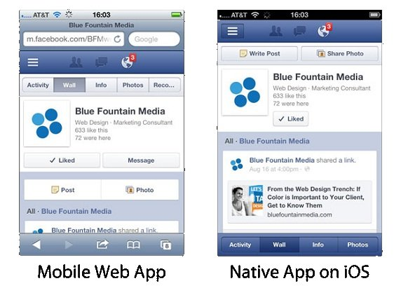
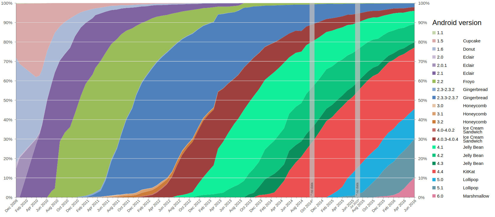
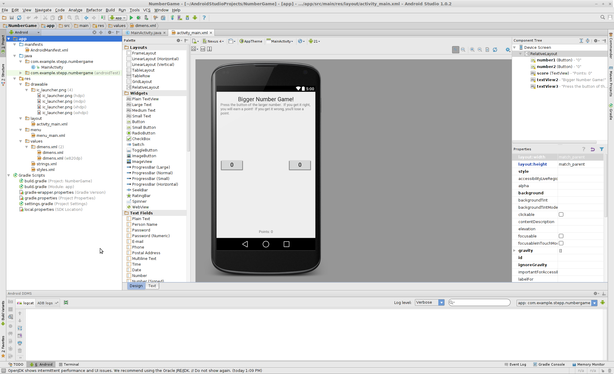
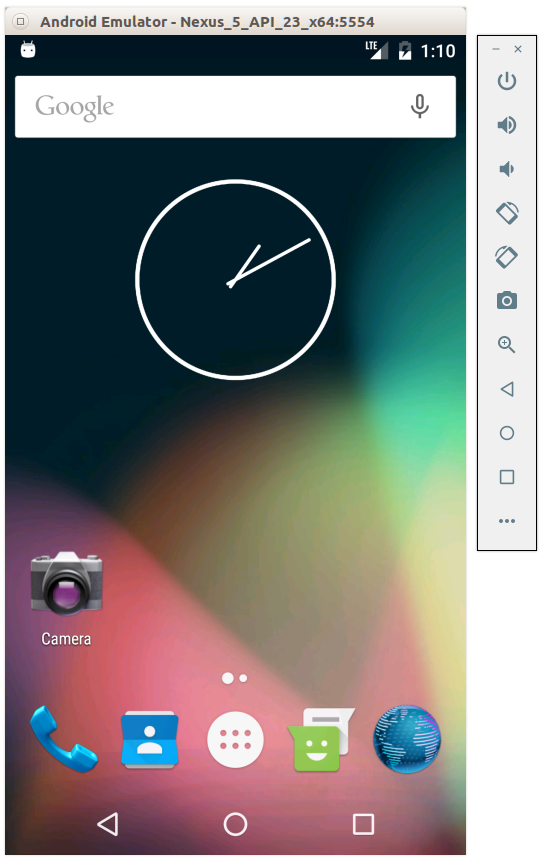

What is CS 193A?
- CS 193A: Intro to Android Development
- 3 units
- increased reliance on Piazza and peer help
- Prerequisite: CS 106B or equivalent
- basic Java programming knowledge
- object-oriented programming
- data structures (ArrayList, HashMap, etc.)
What is Android?

- mobile OS maintained by Google
- originally purchased from Android, Inc. in 2005
- runs on phones, tablets, watches, TVs, ...
- based on Java (dev language) and Linux (kernel)
- the #1 mobile OS worldwide, and now #1 overall OS worldwide!
- has over 1 million apps published in Play Store
- code is released as open source (periodically)
- easier to customize, license, pirate, etc. than iOS
Why develop for Android?
- Why not just write a web site? Android has a browser...
- better, snappier UI with a more consistent user experience
- able to use different kinds of widgets/controls than in a web page
- more direct access to the device's hardware (camera, GPS, etc.)
- users highly prefer apps over mobile web browsing

Why not iOS?
Why not write apps for iOS, which runs on iPhones and iPads?
- familiar language (Java, not Obj-C / Swift)
- free dev tools (Apple charges $$$)
- more liberated app store (can make an app and put on your phone or others')
- Android has a larger install base
- there is already a CS 193P class for building iOS apps! Take it!
Android architecture
- Android OS provides libraries for many system features like contacts, phone dialing, notifications, 2D/3D graphics, database access, security / encryption, camera, audio, input/output, ...
- Android Java code is compiled into a special Dalvik binary format

Android version history
| Version | API level | Date | Codename |
|---|---|---|---|
| 1.0 - 1.1 | 1, 2 | Sep 2008 | none |
| 1.5 | 3 | Apr 2009 | Cupcake |
| 1.6 | 4 | Sep 2009 | Donut |
| 2.0 - 2.1 | 5, 6, 7 | Oct 2009 | Eclair |
| 2.2 | 8 | May 2010 | Froyo |
| 2.3 | 9, 10 | Dec 2010 | Gingerbread |
| 3.0 | 11, 12, 13 | Feb 2011 | Honeycomb |
| 4.0 | 14, 15 | Oct 2011 | Ice Cream Sandwich |
| 4.1 - 4.3 | 16, 17, 18 | Jun 2012 | Jelly Bean |
| 4.4 | 19, 20 | Sep 2013 | Kit Kat |
| 5.0 - 5.1 | 21 - 22 | Jun 2014 | Lollipop |
| 6.0 | 23 | Oct 2015 | Marshmallow |
| 7.0 - 7.1.1 | 24 - 25 | Aug 2016 | Nougat |
Version distribution

Version issues
-
Check your phone's version of Android:
- Settings → System → About Device → Android version
- "Why wouldn't my phone have the newest Android version? Can't I just update it?"
- Several companies affect whether your device is up-to-date:
- Google; phone manufacturer; service provider; ...
→ → →
- Google; phone manufacturer; service provider; ...
- If any company in the chain doesn't want to push out an update for your device, it can become out of date.
Android Studio (install)
- Google's official Android IDE, at v2.2 as of January 2017
- replaces previous Eclipse-based environment
- based on IntelliJ IDEA editor; free to download and use

Project structure

- AndroidManifest.xml
- overall project config and settings
- src/java/...
- source code for your Java classes
- res/... = resource files (many are XML)
- drawable/ = images
- layout/ = descriptions of GUI layout
- menu/ = overall app menu options
- values/ = constant values and arrays
- strings/ = localization data
- styles/ = general appearance styling
- Gradle
- a build/compile management system
- build.gradle = main build config file
Virtual Devices (AVDs)

- emulator / software simulation of an Android device
- when you click "Run" in Android Studio, it builds your app, installs it on the virtual device, and loads it
- must set up virtual device first in Android Studio
- alternative: install your app
on your actual Android device!
- pro: app runs faster, better "real" test
- con: need device plugged into dev PC